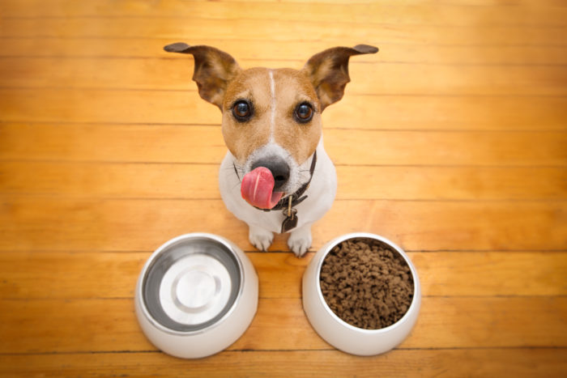
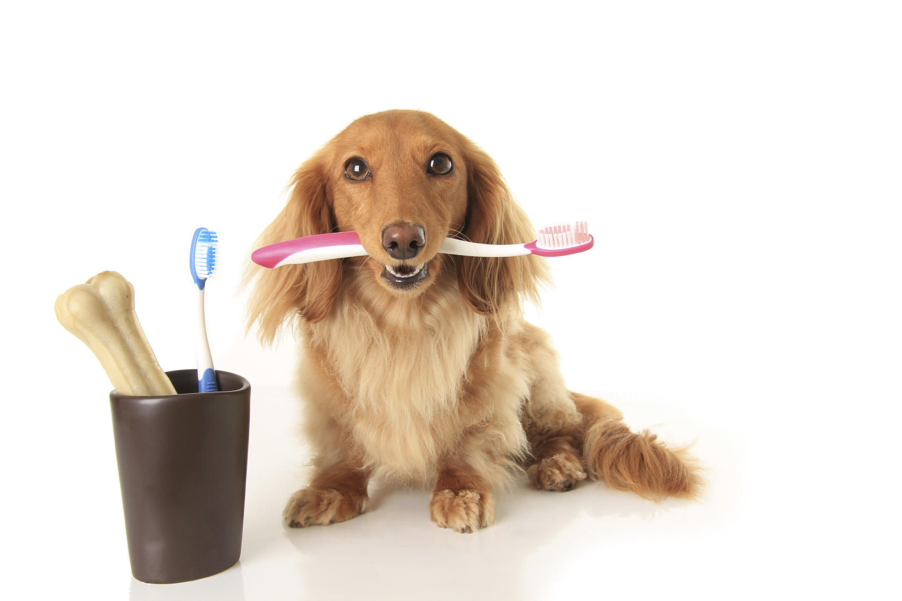
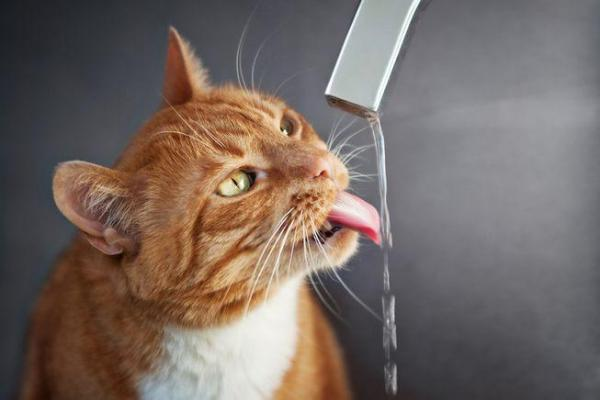
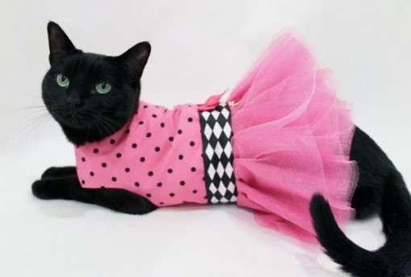
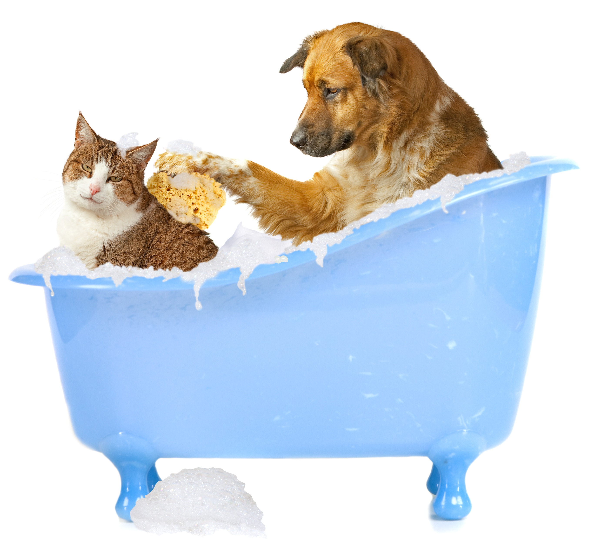

Dicas :)

Alimentação
Utilizar comedouros lentos, que são divididos em compartimentos com diversas porções de ração, de forma a diminuir a ansiedade no momento da alimentação e estimular o raciocínio do animal. Você também pode dividir a refeição em porções menores e oferecê-las de tempos em tempos ao longo do dia, o que evita que o animal se sinta faminto ao alimentar-se somente uma vez.

Saúde Bucal
Os pets também precisam de cuidados odontológicos, de maneira a evitar problemas como tártaro, mau hálito, gengivite e até a perda dos dentes. Por isso, observe sempre a coloração das gengivas de seu pet — que deve ser rosada —, faça a escovação com regularidade e inclua mordedores que auxiliam na saúde bucal.

Hidratação
Em relação à ingestão de água, para os animais maiores e principalmente nos dias mais quentes, talvez seja interessante deixar mais de um bebedouro pela casa. E não se esqueça de manter a água sempre fresca e limpa, pois além de ser mais saudável para o pet, muitos deles deixam de se hidratar quando a água não está recém-trocada.

Roupas
O uso de roupas pode ser indicado para o pet que tiver a pelagem mais curta, principalmente durante o inverno. Por isso, evite deixá-la molhada e troque-a sempre que necessário. Alguns animais podem caminhar com sapatilhas especiais, que protegem as patas da umidade, do frio e também de superfícies muito quentes.
